Microsoft® Excel® is a tool that can be used in virtually all careers and is valuable in both professional and personal settings. Whether you need to keep track of medications in inventory for a hospital or create a financial plan for your retirement, Excel enables you to do these activities efficiently and accurately. This chapter introduces the fundamental skills necessary to get you started in using Excel. You will find that just a few skills can make you very productive in a short period of time.
Microsoft® Office contains a variety of tools that help people accomplish many personal and professional objectives. Microsoft Excel is perhaps the most versatile and widely used of all the Office applications. No matter which career path you choose, you will likely need to use Excel to accomplish your professional objectives, some of which may occur daily. This chapter provides an overview of the Excel application along with an orientation for accessing the commands and features of an Excel workbook.
Follow-along file: Not needed for this skill
Taking a very simple view, Excel is a tool that allows you to enter quantitative data into an electronic spreadsheet to apply one or many mathematical computations. These computations ultimately convert that quantitative data into information. The information produced in Excel can be used to make decisions in both professional and personal contexts. For example, employees can use Excel to determine how much inventory to buy for a clothing retailer, how much medication to administer to a patient, or how much money to spend to stay within a budget. With respect to personal decisions, you can use Excel to determine how much money you can spend on a house, how much you can spend on car lease payments, or how much you need to save to reach your retirement goals. We will demonstrate how you can use Excel to make these decisions and many more throughout this text.
Figure 1.1 "Example of an Excel Worksheet with Embedded Chart" shows a completed Excel worksheet that will be constructed in this chapter. The information shown in this worksheet is top-line sales data for a hypothetical merchandise retail company. The worksheet data can help this retailer determine the number of salespeople needed for each month, how much inventory is needed to satisfy sales, and what types of products should be purchased. Notice that the embedded chart makes it very easy to see which months have the highest unit sales.
Figure 1.1 Example of an Excel Worksheet with Embedded Chart

Follow-along file: Not needed for this skill
The following steps will guide you in starting the Excel application. Note that these steps along with Figure 1.2 "Start Menu" relate to the Windows 7 operating system, which is very similar to the Windows Vista operating system.
Figure 1.2 Start Menu

Follow-along file: Not needed for this skill
Once Excel is started, a blank workbook will open on your screen. A workbookAn Excel file that contains one or more worksheets. is an Excel file that contains one or more worksheetsMay also be referred to as a spreadsheet and contains rectangles called cells for entering numeric and nonnumeric data. (sometimes referred to as spreadsheets). Excel will assign a file name to the workbook, such as Book1, Book2, Book3, and so on, depending on how many new workbooks are opened. Figure 1.3 "Blank Workbook" shows a blank workbook after starting Excel.
Figure 1.3 Blank Workbook

Your workbook should already be maximized (or shown at full size) once Excel is started, as shown in Figure 1.3 "Blank Workbook". However, if your screen looks like Figure 1.4 "Restored Worksheet" after starting Excel, you should click the Maximize button, as shown in the figure.
Figure 1.4 Restored Worksheet

Follow-along file: Not needed for this skill
Data are entered and managed in an Excel worksheet. The worksheet contains several rectangles called cells for entering numeric and nonnumeric data. Each cellA specific location on a worksheet where data are entered and stored. in an Excel worksheet contains an address, which is defined by a column letter followed by a row number. For example, the cell that is currently activated in Figure 1.4 "Restored Worksheet" is A1. This would be referred to as cell locationA column letter followed by a row number used to identify specific cells on a worksheet. A1 or cell referenceWhen cell locations are used in formulas, Excel will reference the data that is entered into the cell. The cell reference is the cell location address. A1. The following steps explain how you can navigate in an Excel worksheet:
Check to make sure column letter D and row number 5 are highlighted in orange, as shown in Figure 1.5 "Activating a Cell Location".
Figure 1.5 Activating a Cell Location

Release the left mouse button. You should see several cells highlighted, as shown in Figure 1.6 "Highlighting a Range of Cells". This is referred to as a cell rangeAny group of contiguous cell locations; a cell range is noted as two cell locations separated by a colon. and is documented as follows: A1:D5. Any two cell locations separated by a colon are known as a cell range. The first cell is the top left corner of the range, and the second cell is the lower right corner of the range.
Figure 1.6 Highlighting a Range of Cells

Basic Worksheet Navigation
Follow-along file: Not needed for this skill
Excel’s features and commands are found in the RibbonThe upper area of the Excel screen that contains several tabs running across the top. Each tab provides access to a different set of Excel commands., which is the upper area of the Excel screen that contains several tabs running across the top. Each tab provides access to a different set of Excel commands. Figure 1.7 "Ribbon for Excel" shows the commands available in the Home tab of the Ribbon. Table 1.1 "Command Overview for Each Tab of the Ribbon" provides an overview of the commands that are found in each tab of the Ribbon.
Figure 1.7 Ribbon for Excel

Table 1.1 Command Overview for Each Tab of the Ribbon
| Tab Name | Description of Commands |
|---|---|
| File | Also known as the Backstage view of the Excel workbook. Contains all commands for opening, closing, saving, and creating new Excel workbooks. Includes print commands, document properties, e-mailing options, and help features. The default settings and options are also found in this tab. |
| Home | Contains the most frequently used Excel commands. Formatting commands are found in this tab along with commands for cutting, copying, pasting, and for inserting and deleting rows and columns. |
| Insert | Used to insert objects such as charts, pictures, shapes, PivotTables, Internet links, symbols, or text boxes. |
| Page Layout | Contains commands used to prepare a worksheet for printing. Also includes commands used to show and print the gridlines on a worksheet. |
| Formulas | Includes commands for adding mathematical functions to a worksheet. Also contains tools for auditing mathematical formulas. |
| Data | Used when working with external data sources such as Microsoft® Access®, text files, or the Internet. Also contains sorting commands and access to scenario tools. |
| Review | Includes Spelling and Track Changes features. Also contains protection features to password protect worksheets or workbooks. |
| View | Used to adjust the visual appearance of a workbook. Common commands include the Zoom and Page Layout view. |
The Ribbon shown in Figure 1.7 "Ribbon for Excel" is full, or maximized. The benefit of having a full Ribbon is that the commands are always visible while you are developing a worksheet. However, depending on the screen dimensions of your computer, you may find that the Ribbon takes up too much vertical space on your worksheet. If this is the case, you can minimize the Ribbon by clicking the button shown in Figure 1.7 "Ribbon for Excel". When minimized, the Ribbon will show only the tabs and not the command buttons. When you click on a tab, the command buttons will appear until you select a command or click anywhere on your worksheet.
Minimizing or Maximizing the Ribbon
Follow-along file: Not needed for this skill
The Quick Access ToolbarLocated at the upper-left side of the Excel screen above the Ribbon, this toolbar provides access to the most frequently used commands, such as Save and Undo. is found at the upper left side of the Excel screen above the Ribbon, as shown in Figure 1.3 "Blank Workbook". This area provides access to the most frequently used commands, such as Save and Undo. You also can customize the Quick Access Toolbar by adding commands that you use on a regular basis. By placing these commands in the Quick Access Toolbar, you do not have to navigate through the Ribbon to find them. To customize the Quick Access Toolbar, click the down arrow as shown in Figure 1.8 "Customizing the Quick Access Toolbar". This will open a menu of commands that you can add to the Quick Access Toolbar. If you do not see the command you are looking for on the list, select the More Commands option.
Figure 1.8 Customizing the Quick Access Toolbar

In addition to the Ribbon and Quick Access Toolbar, you can also access commands by right clicking anywhere on the worksheet. Figure 1.9 "Right-Click Menu" shows an example of the commands available in the right-click menu.
Figure 1.9 Right-Click Menu
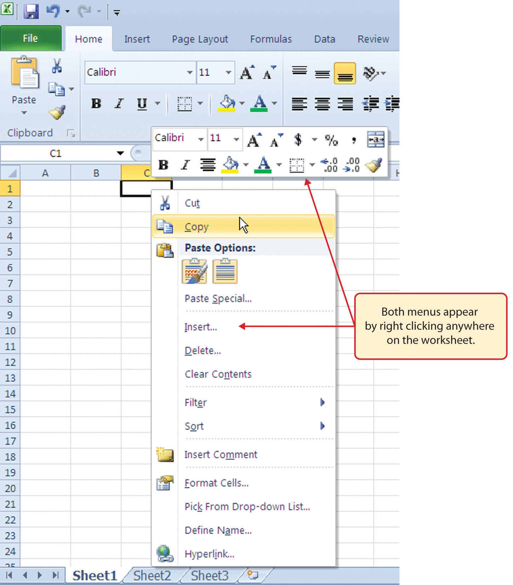Follow-along file: Not needed for this skill
If you have used Office 2007, you may have noticed that the Office button has disappeared in the 2010 version. It has been replaced with the File tab on the far left side of the Ribbon. The File tab is also known as the Backstage viewThis view, which is opened through the File tab on the Ribbon, contains a variety of features and commands related to the workbook that is currently open. of the workbook. It contains a variety of features and commands related to the workbook that is currently open, new workbooks, or workbooks stored in other locations on your computer or network. Figure 1.10 "File Tab or Backstage View of a Workbook" shows the options available in the File tab or Backstage view. To leave the Backstage view and return to the worksheet, click any tab on the Ribbon or click the image of the worksheet on the right side of the window. You must click the Info button (highlighted in green in Figure 1.10 "File Tab or Backstage View of a Workbook") to see the image of your worksheet on the right side of the window.
Figure 1.10 File Tab or Backstage View of a Workbook
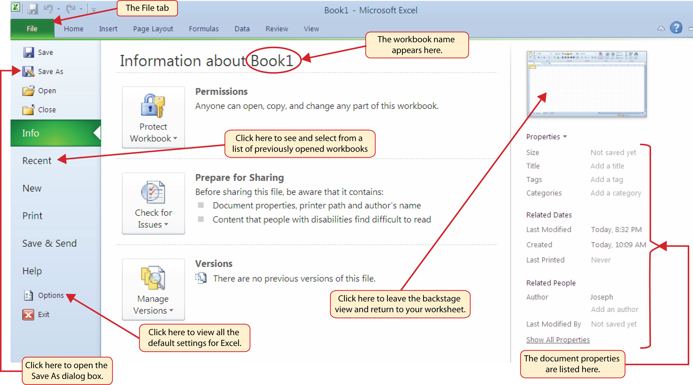Included in the File tab are the default settings for the Excel application that can be accessed and modified by clicking the Options button. Figure 1.11 "Excel Options Window" shows the Excel Options window, which gives you access to settings such as the default font style, font size, and the number of worksheets that appear in new workbooks.
Figure 1.11 Excel Options Window
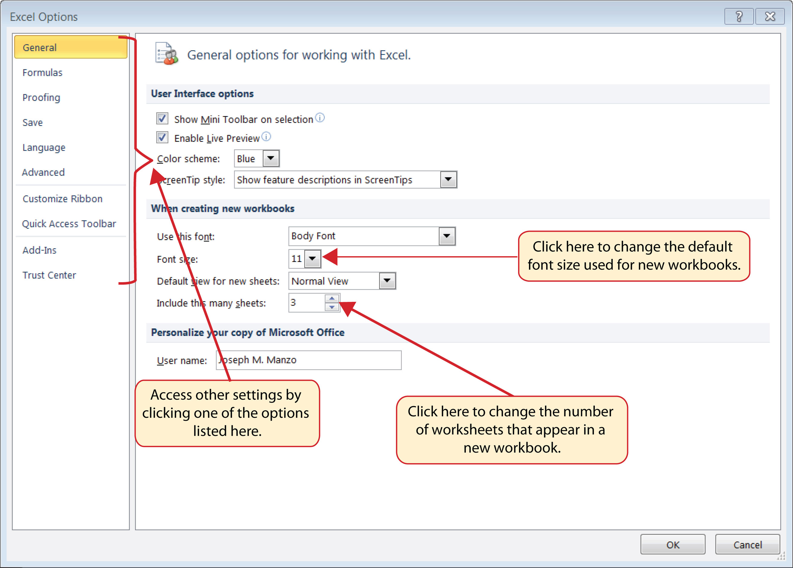Follow-along file: Not needed for this skill
Once you create a new workbook, you will need to change the file name and choose a location on your computer or network to save it. The following steps explain how to save a new workbook and assign it a file name. It is important to remember where you save this workbook on your computer or network as you will be using this file in the Section 1.2 "Entering, Editing, and Managing Data" to construct the workbook shown in Figure 1.1 "Example of an Excel Worksheet with Embedded Chart".
Figure 1.12 Save As Dialog Box
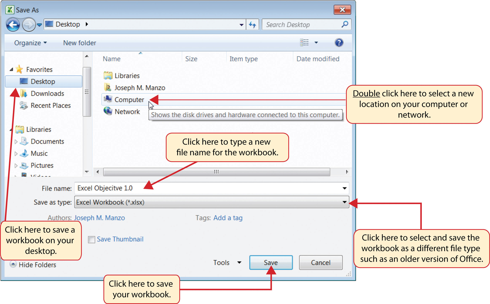Save As
Follow-along file: Open a blank workbook.
If you are working with someone who is using a version of Microsoft Office that is older than Office 2007, you will have to save your workbook under the Excel 97-2003 Workbook format. A person who is running Office 2003 will not be able to open workbooks that are saved under the Office 2010 or Office 2007 file types. You can save a workbook as an Excel 97-2003 file type by clicking the down arrow next to the “Save as type” box in the Save As dialog box (see Figure 1.12 "Save As Dialog Box").
You can also change the file type of your workbook by using the File tab on the Ribbon. The following steps explain this method:
Figure 1.13 Changing the File Type of a Workbook
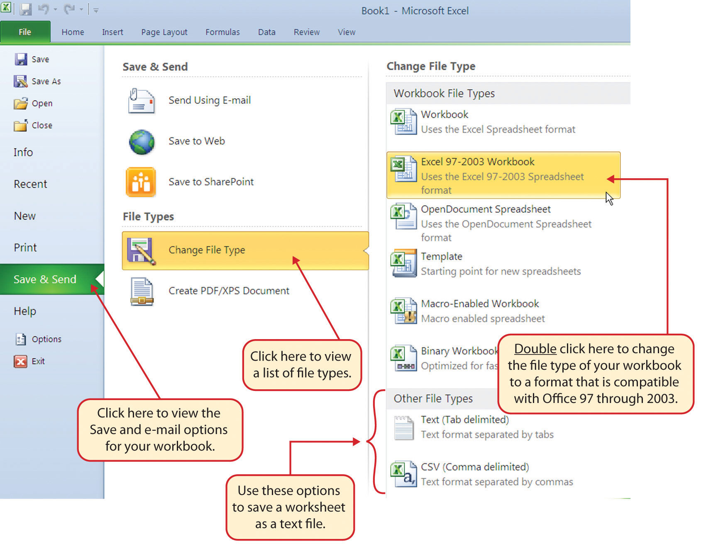No Office 2007 File Type
Workbooks that are created in Office 2010 are automatically compatible with Office 2007. A person who is running Office 2007 will be able to open, edit, and save workbooks created in Office 2010.
When you convert an existing workbook created in Office 2010 to the Excel 97-2003 file type, you may not notice any changes on the workbook itself. If you are using a feature or format that is not compatible with Office 97-2003, a warning will appear upon saving the file. You may want to remove these features and formats before sending the workbook to a person who is running an older version of Office. When you open a file that is saved in the Excel 97-2003 format, you will see the Compatibility Mode indicator next to the workbook name, as shown in Figure 1.14 "Workbook That Has Been Saved in Excel 97-2003 Format".
Figure 1.14 Workbook That Has Been Saved in Excel 97-2003 Format

Follow-along file: Continue with a blank workbook or open a new one.
The Status BarLocated below the worksheet tabs on the Excel screen, it displays a variety of information, such as the status of certain keys on your keyboard (e.g., CAPS LOCK), the available views for a workbook, the magnification of the screen, or mathematical functions that can be performed when data are highlighted on a worksheet. is located below the worksheet tabs on the Excel screen (see Figure 1.15 "Customizing the Status Bar"). It displays a variety of information, such as the status of certain keys on your keyboard (e.g., CAPS LOCK), the available views for a workbook, the magnification of the screen, and mathematical functions that can be performed when data are highlighted on a worksheet. You can customize the Status Bar as follows:
Figure 1.15 Customizing the Status Bar
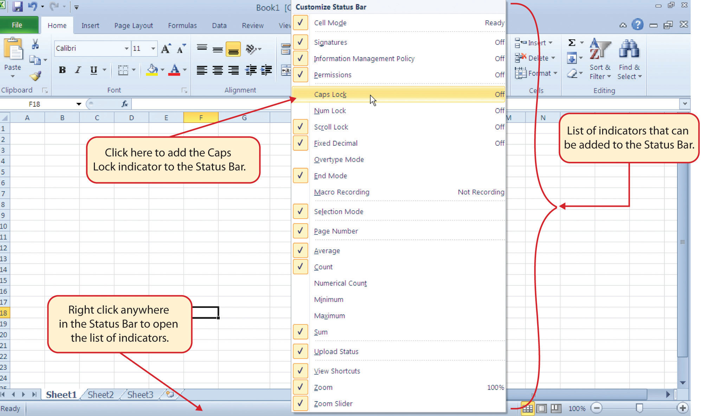Follow-along file: Continue with a blank workbook or open a new one.
The Help feature provides extensive information about the Excel application. Although some of this information may be stored on your computer, the Help window will automatically connect to the Internet, if you have a live connection, to provide you with resources that can answer most of your questions. You can open the Excel Help window by clicking the question mark in the upper right corner of the screen (see Figure 1.3 "Blank Workbook"). Here you can search for specific topics or type a question in the upper-left side of the window, as shown in Figure 1.16 "Excel Help Window".
Figure 1.16 Excel Help Window

Excel Help
Which of the following responses best defines the notation A1:B15?
The Spell Check feature is in which tab of the Excel Ribbon?
Holding down the CTRL key and pressing the F1 key on your keyboard is used to
If you are sending an Excel workbook created in Office 2010 to a person who is running Office 2007, you should do the following:
In this section, we will begin the development of the workbook shown in Figure 1.1 "Example of an Excel Worksheet with Embedded Chart". The skills covered in this section are typically used in the early stages of developing one or more worksheets in a workbook.
Follow-along file: Excel Objective 1.0 (This is a blank workbook that was named in the previous section. If you skipped the previous section, open a new workbook and save it with the file name “Excel Objective 1.0.”)
We will begin building the workbook shown in Figure 1.1 "Example of an Excel Worksheet with Embedded Chart" by manually entering data into the worksheet. There are other ways in which you can bring data into an Excel worksheet, such as importing data from a website or a Microsoft Access database. However, we will demonstrate these other methods later. The following steps explain how the column headings in Row 2 are typed into the worksheet:
Repeat step 4 for the words Average Price and Sales Dollars.
Figure 1.17 "Entering Column Headings into a Worksheet" shows how your worksheet should appear after you have typed the column headings into Row 2. Notice that the word Price in cell location C2 is not visible. This is because the column is too narrow to fit the entry you typed. We will examine formatting techniques to correct this problem in the next section.
Figure 1.17 Entering Column Headings into a Worksheet
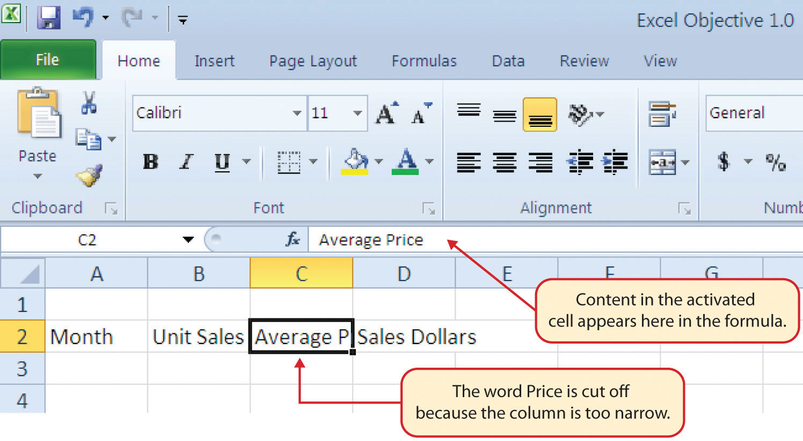Column Headings
It is critical to include column headings that accurately describe the data in each column of a worksheet. In professional environments, you will likely be sharing Excel workbooks with coworkers. Good column headings reduce the chance of someone misinterpreting the data contained in a worksheet, which could lead to costly errors depending on your career.
Repeat step 7 by entering the following numbers in cells B4 through B14: 2160, 515, 590, 1030, 2875, 2700, 900, 775, 1180, 1800, and 3560.
Avoid Formatting Symbols When Entering Numbers
When typing numbers into an Excel worksheet, it is best to avoid adding any formatting symbols such as dollar signs and commas. Although Excel allows you to add these symbols while typing numbers, it slows down the process of entering data. It is more efficient to use Excel’s formatting features to add these symbols to numbers after you type them into a worksheet.
Data Entry
It is very important to proofread your worksheet carefully, especially when you have entered numbers. Transposing numbers when entering data manually into a worksheet is a common error. For example, the number 563 could be transposed to 536. Such errors can seriously compromise the integrity of your workbook.
Figure 1.18 "Completed Data Entry for Columns B, C, and D" shows how your worksheet should appear after entering the data. Check your numbers carefully to make sure they are accurately entered into the worksheet.
Figure 1.18 Completed Data Entry for Columns B, C, and D

Follow-along file: Excel Objective 1.0 (Use file Excel Objective 1.01 if you are starting with this skill.)
Data that has been entered in a cell can be changed by double clicking the cell location or using the Formula BarThe area just above the column letters on a worksheet. It can be used for entering data into cells as well as for editing data that already exists in cells.. You may have noticed that as you were typing data into a cell location, the data you typed appeared in the Formula Bar. The Formula Bar can be used for entering data into cells as well as for editing data that already exists in a cell. The following steps provide an example of entering and then editing data that has been entered into a cell location:
Click the checkmark to the left of the Formula Bar (see Figure 1.19 "Using the Formula Bar to Edit and Enter Data"). This will enter the change into the cell.
Figure 1.19 Using the Formula Bar to Edit and Enter Data

Editing Data in a Cell
Follow-along file: Excel Objective 1.0 (Use file Excel Objective 1.02 if you are starting with this skill.)
The Auto FillAn Excel feature used to complete data in either a quantitative or qualitative sequence. It can also be used to copy and paste data in a worksheet. feature is a valuable tool when manually entering data into a worksheet. This feature has many uses, but it is most beneficial when you are entering data in a defined sequence, such as the numbers 2, 4, 6, 8, and so on, or nonnumeric data such as the days of the week or months of the year. The following steps demonstrate how Auto Fill can be used to enter the months of the year in Column A:
Move the mouse pointer to the lower right corner of cell A3. You will see a small square in this corner of the cell; this is called the Fill HandleA small square in lower right corner of an activated cell. When the mouse pointer gets close to the Fill Handle, the white block plus sign turns into a black plus sign. (see Figure 1.20 "Fill Handle"). When the mouse pointer gets close to the Fill Handle, the white block plus sign will turn into a black plus sign.
Figure 1.20 Fill Handle

Left click and drag the Fill Handle to cell A14. Notice that the Auto Fill tip box indicates what month will be placed into each cell (see Figure 1.21 "Using Auto Fill to Enter the Months of the Year"). Release the left mouse button when the tip box reads “December.”
Figure 1.21 Using Auto Fill to Enter the Months of the Year

Once you release the left mouse button, all twelve months of the year should appear in the cell range A3:A14, as shown in Figure 1.22 "Auto Fill Options Button". You will also see the Auto Fill Options button. By clicking this button, you have several options for inserting data into a group of cells.
Figure 1.22 Auto Fill Options Button

Follow-along file: Excel Objective 1.0 (Use file Excel Objective 1.03 if you are starting with this skill.)
There are several methods for removing data from a worksheet, a few of which are demonstrated here. With each method, you use the Undo command. This is a helpful command in the event you mistakenly remove data from your worksheet. The following steps demonstrate how you can delete data from a cell or range of cells:
Left click and drag the mouse pointer up to cell C3 (see Figure 1.23 "Using Auto Fill to Delete Contents of Cell"). Release the mouse button. The contents in the range C3:C14 will be removed.
Figure 1.23 Using Auto Fill to Delete Contents of Cell
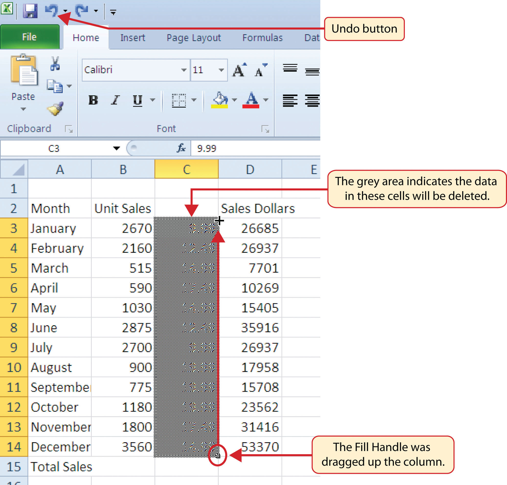Click the Undo button again. This should replace the data in cell C2.
Undo Command
Figure 1.24 Clear Command Drop-Down Menu

Follow-along file: Excel Objective 1.0 (Use file Excel Objective 1.03 if you are starting with this skill.)
In Figure 1.22 "Auto Fill Options Button", there are a few entries that appear cut off. For example, the last letter of the word September cannot be seen in cell A11. This is because the column is too narrow for this word. The columns and rows on an Excel worksheet can be adjusted to accommodate the data that is being entered into a cell. The following steps explain how to adjust the column widths and row heights in a worksheet:
Release the left mouse button.
Figure 1.25 Adjusting Column Widths
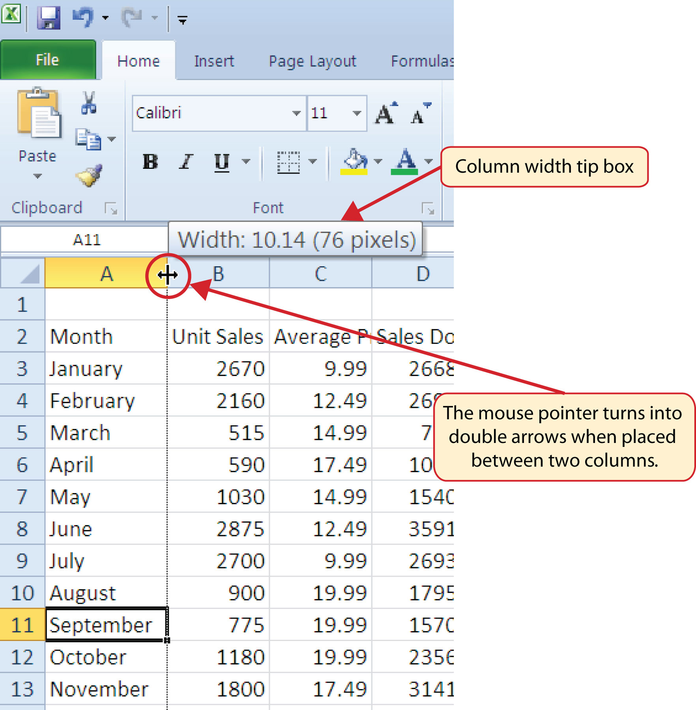You may find that using the click-and-drag method is inefficient if you need to set a specific character width for one or more columns. Steps 4 through 7 illustrate a second method for adjusting column widths when using a specific number of characters:
Type the number 13 and click the OK button on the Column Width dialog box. This will set Column A to this character width (see Figure 1.28 "Column Width Dialog Box").
Figure 1.26 Cells Group in the Home Tab
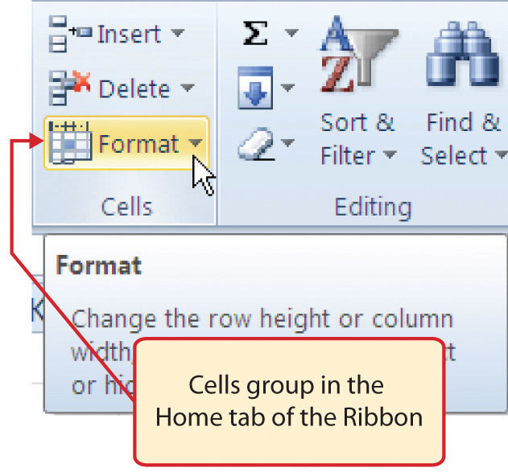Figure 1.27 Format Drop-Down Menu

Figure 1.28 Column Width Dialog Box

Column Width
Steps 8 through 10 demonstrate how to adjust row height, which is similar to adjusting column width:
Row Height
Figure 1.29 "Excel Objective 1.0 with Column A and Row 15 Adjusted" shows the appearance of the worksheet after Column A and Row 15 are adjusted.
Figure 1.29 Excel Objective 1.0 with Column A and Row 15 Adjusted
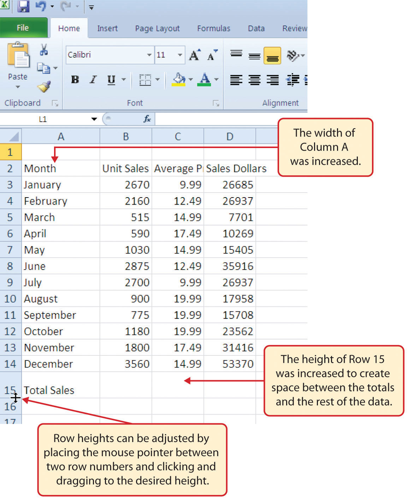Follow-along file: Excel Objective 1.0 (Use file Excel Objective 1.04 if you are starting with this skill.)
In addition to adjusting the columns and rows on a worksheet, you can also hide columns and rows. This is a useful technique for enhancing the visual appearance of a worksheet that contains data that is not necessary to display. These features will be demonstrated using the Excel Objective 1.0 workbook. However, there is no need to have hidden columns or rows for this worksheet. The use of these skills here will be for demonstration purposes only.
Click the Hide Columns option in the submenu of options (see Figure 1.30 "Hide & Unhide Submenu"). This will hide Column C.
Figure 1.30 Hide & Unhide Submenu

Hiding Columns
Figure 1.31 "Hidden Column" shows the workbook with Column C hidden in the Sheet1 worksheet. You can tell a column is hidden by the missing letter C.
Figure 1.31 Hidden Column
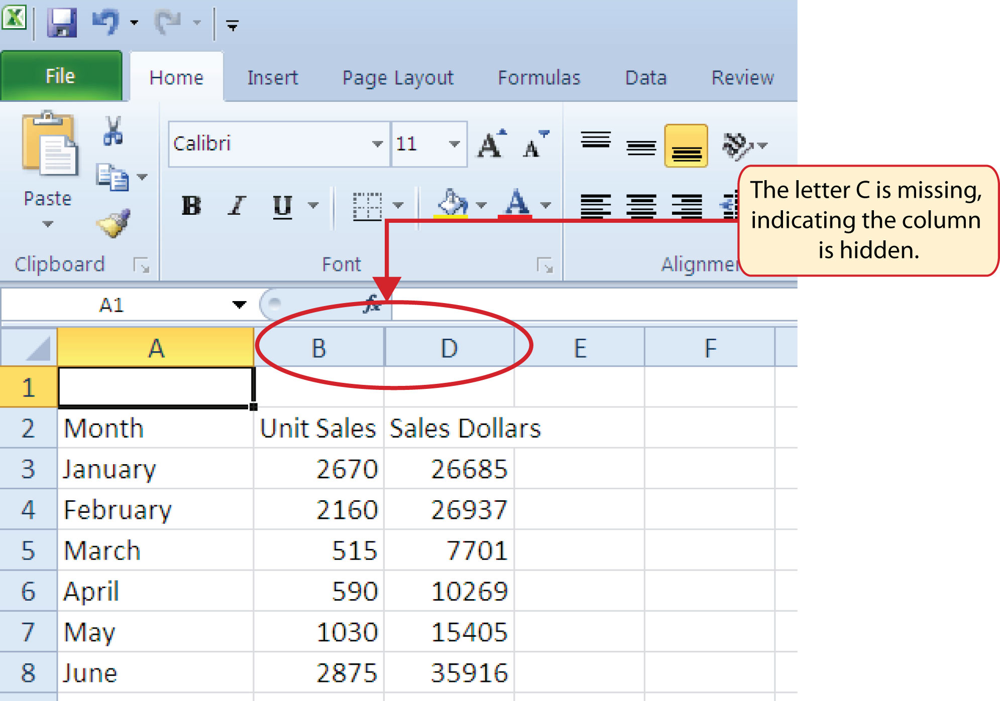To unhide a column, follow these steps:
Click the Unhide Columns option in the submenu of options (see Figure 1.30 "Hide & Unhide Submenu"). Column C will now be visible on the worksheet.
Unhiding Columns
The following steps demonstrate how to hide rows, which is similar to hiding columns:
Click the Hide Rows option in the submenu of options (see Figure 1.30 "Hide & Unhide Submenu"). This will hide Row 3.
Hiding Rows
To unhide a row, follow these steps:
Unhiding Rows
Hidden Rows and Columns
In most careers, it is common for professionals to use Excel workbooks that have been designed by a coworker. Before you use a workbook developed by someone else, always check for hidden rows and columns. You can quickly see whether a row or column is hidden if a row number or column letter is missing.
Follow-along file: Excel Objective 1.0 (Use file Excel Objective 1.04 if you are starting with this skill.)
Using Excel workbooks that have been created by others is a very efficient way to work because it eliminates the need to create data worksheets from scratch. However, you may find that to accomplish your goals, you need to add additional columns or rows of data. In this case, you can insert blank columns or rows into a worksheet. The following steps demonstrate how to do this:
Click the down arrow on the Insert button in the Home tab of the Ribbon (see Figure 1.32 "Insert Button (Down Arrow)").
Figure 1.32 Insert Button (Down Arrow)
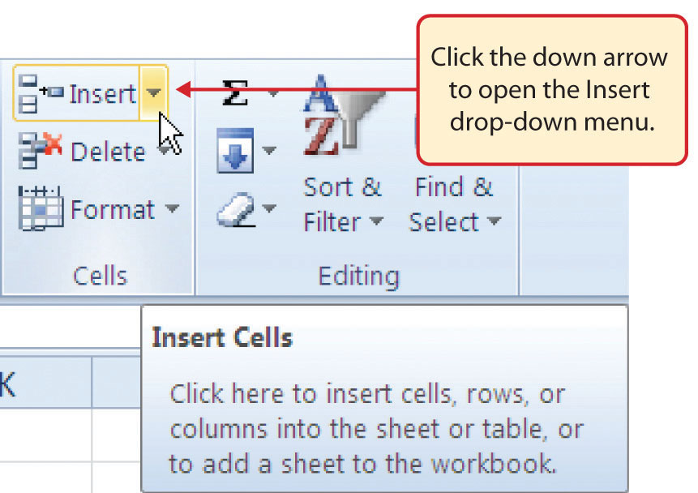Click the Insert Sheet Columns option from the drop-down menu (see Figure 1.33 "Insert Drop-Down Menu"). A blank column will be inserted to the left of Column C. The contents that were previously in Column C now appear in Column D. Note that columns are always inserted to the left of the activated cell.
Inserting Columns
Figure 1.33 Insert Drop-Down Menu

Inserting Rows
Follow-along file: Excel Objective 1.0 (Use file Excel Objective 1.05 if you skipped the previous skill and are starting with this skill.)
Once data are entered into a worksheet, you have the ability to move it to different locations. The following steps demonstrate how to move data to different locations on a worksheet:
Bring the mouse pointer to the left edge of cell D2. You will see the white block plus sign change to cross arrows (see Figure 1.34 "Moving Data"). This indicates that you can left click and drag the data to a new location.
Figure 1.34 Moving Data

Moving Data
Before moving data on a worksheet, make sure you identify all the components that belong with the series you are moving. For example, if you are moving a column of data, make sure the column heading is included. Also, make sure all values are highlighted in the column before moving it.
Follow-along file: Excel Objective 1.0 (Use file Excel Objective 1.05 if you are starting with this skill.)
You may need to delete entire columns or rows of data from a worksheet. This need may arise if you need to remove either blank columns or rows from a worksheet or columns and rows that contain data. The methods for removing cell contents were covered earlier and can be used to delete unwanted data. However, if you do not want a blank row or column in your workbook, you can delete it using the following steps:
Click the Delete Sheet Rows option from the drop-down menu (see Figure 1.35 "Delete Drop-Down Menu"). This removes Row 3 and shifts all the data (below Row 2) in the worksheet up one row.
Deleting Rows
Figure 1.35 Delete Drop-Down Menu
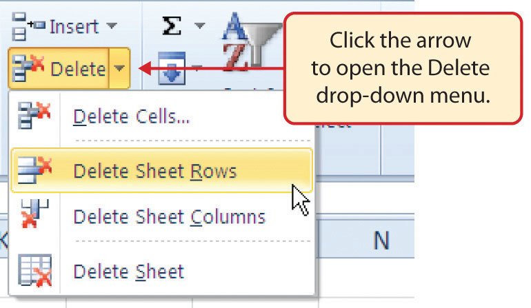Deleting Columns
When entering numeric data into an Excel worksheet, you should omit symbols such as commas or dollar signs because:
Which of the following statements is true with respect to editing the content in a cell location?
Which of the following will enable you to identify hidden columns in a worksheet?
Which of the following is true with respect to inserting blank rows into a worksheet?
This section addresses formatting commands that can be used to enhance the visual appearance of a worksheet. It also provides an introduction to mathematical calculations and charts. The skills introduced in this section will give you powerful tools for analyzing the data that we have been working with in this workbook and will highlight how Excel is used to make key decisions in virtually any career.
Follow-along file: Excel Objective 1.0 (Use file Excel Objective 1.04 if you are starting with this skill.)
Enhancing the visual appearance of a worksheet is a critical step in creating a valuable tool for you or your coworkers when making key decisions. The following steps demonstrate several fundamental formatting skills that will be applied to the workbook that we are developing for this chapter. Several of these formatting skills are identical to ones that you may have already used in other Microsoft applications such as Microsoft® Word® or Microsoft® PowerPoint®.
Click the Bold button in the Font group of commands in the Home tab of the Ribbon (see Figure 1.36 "Font Group of Commands").
Figure 1.36 Font Group of Commands
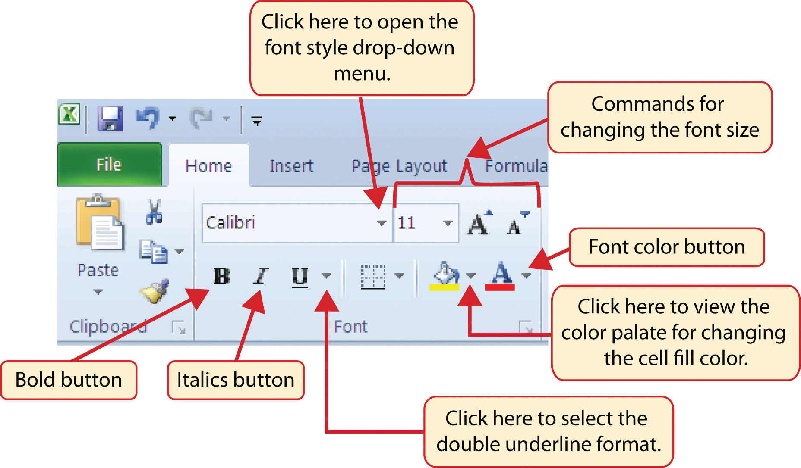Bold Format
Click the Underline button in the Font group of commands in the Home tab of the Ribbon (see Figure 1.36 "Font Group of Commands"). Notice that there is a drop-down arrow next to the Underline button. This is for selecting a double underline format, which is common in careers that deal with accounting or budgeting activities.
Italics Format
Underline Format
Format Column Headings and Totals
Applying formatting enhancements to the column headings and column totals in a worksheet is a very important technique, especially if you are sharing a workbook with other people. These formatting techniques allow users of the worksheet to clearly see the column headings that define the data. In addition, the column totals usually contain the most important data on a worksheet with respect to making decisions, and formatting techniques allow users to quickly see this information.
Click the Comma Style button in the Number group of commands in the Home tab of the Ribbon (see Figure 1.37 "Number Group of Commands").
Figure 1.37 Number Group of Commands

Click the down arrow next to the Fill Color button in the Font group of commands in the Home tab of the Ribbon (see Figure 1.38 "Fill Color Palette").
Figure 1.38 Fill Color Palette

Pound Signs (####) Appear in Columns
When a column is too narrow for a long number, Excel will automatically convert the number to a series of pound signs (####). In the case of words or text data, Excel will only show the characters that fit in the column. However, this is not the case with numeric data because it can give the appearance of a number that is much smaller than what is actually in the cell. To remove the pound signs, increase the width of the column.
Figure 1.39 "Formatting Techniques Applied" shows how the Sheet1 worksheet should appear after the formatting techniques are applied.
Figure 1.39 Formatting Techniques Applied
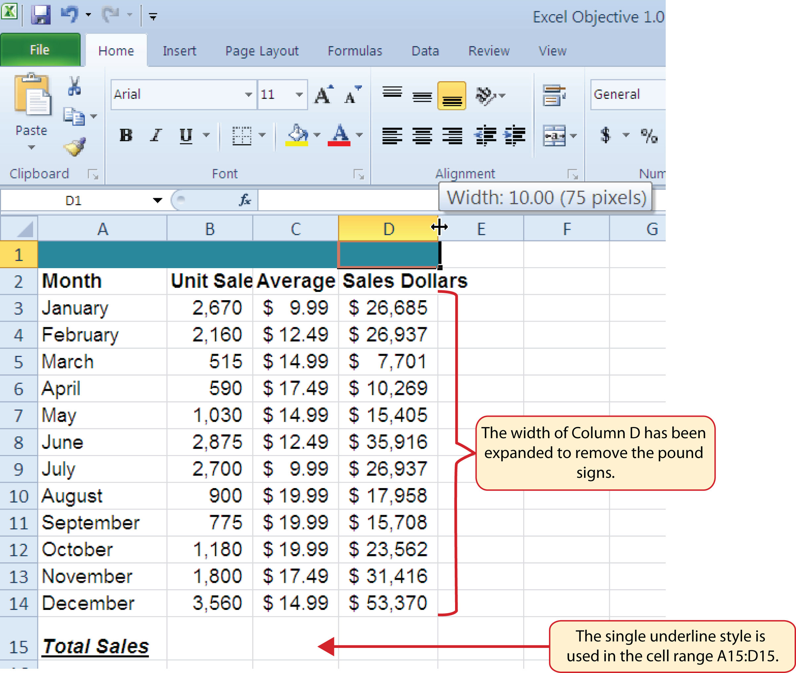Follow-along file: Excel Objective 1.0 (Use file Excel Objective 1.06 if you are starting with this skill.)
The skills presented in this segment show how data are aligned within cell locations. For example, text and numbers can be centered in a cell location, left justified, right justified, and so on. In some cases you may want to stack multiword text entries vertically in a cell instead of expanding the width of a column. This is referred to as wrapping textStacking multiword text entries vertically in a cell.. These skills are demonstrated in the following steps:
Click the Center button in the Alignment group of commands in the Home tab of the Ribbon (see Figure 1.40 "Alignment Group in Home Tab"). This will center the column headings in each cell location.
Figure 1.40 Alignment Group in Home Tab
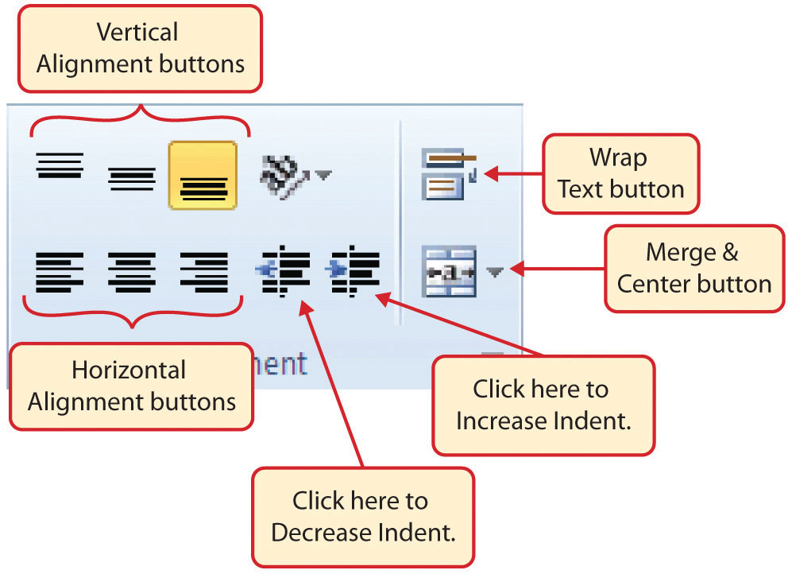Click the Wrap Text button in the Alignment group (see Figure 1.40 "Alignment Group in Home Tab"). The height of Row 2 automatically expands, and the words that were cut off because the columns were too narrow are now stacked vertically (see Figure 1.42 "Sheet1 with Data Alignment Features Added").
Wrap Text
Wrap Text
The benefit of using the Wrap Text command is that it significantly reduces the need to expand the column width to accommodate multiword column headings. The problem with increasing the column width is that you may reduce the amount of data that can fit on a piece of paper or one screen. This makes it cumbersome to analyze the data in the worksheet and could increase the time it takes to make a decision.
Merge Commands
Figure 1.41 Merge Cell Drop-Down Menu

Merge & Center
One of the most common reasons the Merge & Center command is used is to center the title of a worksheet directly above the columns of data. Once the cells above the column headings are merged, a title can be centered above the columns of data. It is very difficult to center the title over the columns of data if the cells are not merged.
Figure 1.42 "Sheet1 with Data Alignment Features Added" shows the Sheet1 worksheet with the data alignment commands applied. The reason for merging the cells in the range A1:D1 will become apparent in the next segment.
Figure 1.42 Sheet1 with Data Alignment Features Added

Follow-along file: Excel Objective 1.0 (Use file Excel Objective 1.07 if you are starting with this skill.)
In the Sheet1 worksheet, the cells in the range A1:D1 were merged for the purposes of adding a title to the worksheet. This title will require that two lines of text be entered into a cell. The following steps explain how you can enter text into a cell and determine where you want the second line of text to begin:
Figure 1.43 Title Added to the Sheet1 Worksheet
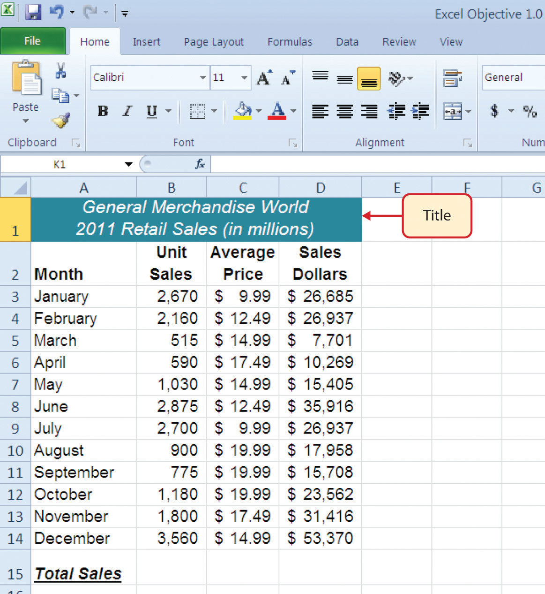Follow-along file: Excel Objective 1.0 (Use file Excel Objective 1.08 if you are starting with this skill.)
In Excel, adding custom lines to a worksheet is known as adding borders. BordersLines that are added to a worksheet to separate the data in columns and rows. are different from the grid lines that appear on a worksheet and that define the perimeter of the cell locations. The Borders command lets you add a variety of line styles to a worksheet that can make reading the worksheet much easier. The following steps illustrate methods for adding preset borders and custom borders to a worksheet:
Click the down arrow to the right of the Borders button in the Font group of commands in the Home page of the Ribbon (see Figure 1.44 "Borders Drop-Down Menu").
Figure 1.44 Borders Drop-Down Menu

Figure 1.45 Borders Tab of the Format Cells Dialog Box
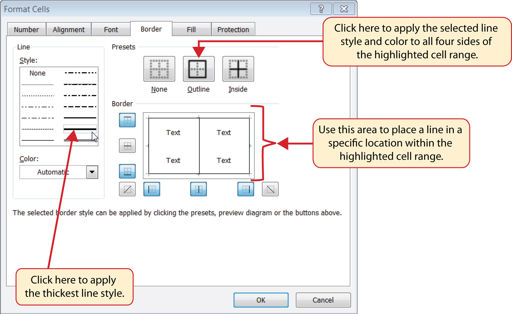Figure 1.46 Borders Added to the Sheet1 Worksheet

Follow-along file: Excel Objective 1.0 (Use file Excel Objective 1.09 if you are starting with this skill.)
You will see at the bottom of Figure 1.46 "Borders Added to the Sheet1 Worksheet" that Row 15 is intended to show the totals for the data in this worksheet. Applying mathematical computations to a range of cells is accomplished through functionsMathematical computations that are applied to a range of cells or specific cells on a worksheet. in Excel. Chapter 2 "Mathematical Computations" will review mathematical formulas and functions in detail. However, the following steps will demonstrate how you can quickly sum the values in a column of data using the AutoSum command:
Click the down arrow below the AutoSum button in the Function Library group of commands (see Figure 1.47 "AutoSum Drop-Down List"). Note that the AutoSum button can also be found in the Editing group of commands in the Home tab of the Ribbon.
Figure 1.47 AutoSum Drop-Down List
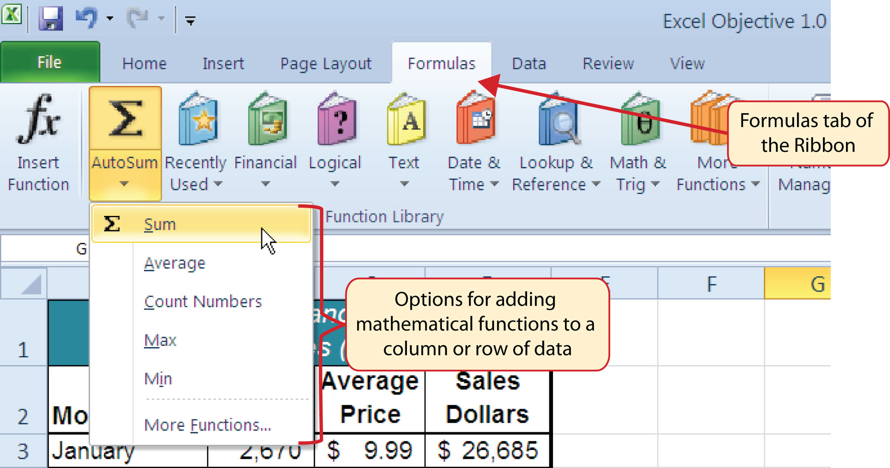Figure 1.48 Totals Added to the Sheet1 Worksheet

Follow-along file: Excel Objective 1.0 (Use file Excel Objective 1.10 if you are starting with this skill.)
As mentioned at the beginning of this chapter, Excel serves as a critical tool for making decisions in both personal and professional contexts. ChartsTools used to graphically display the data in a worksheet. are a powerful tool in Excel that allow you to graphically display the data in a worksheet. Graphical displays allow the reader to immediately identify key trends and behaviors in the data that is being analyzed. For the workbook that we are using for this chapter, understanding the trends in monthly sales data is critical for making decisions such as how many staff members to assign to the store for each month as well as supplying the store with enough inventory to accommodate expected sales. To assist the reader in analyzing this data, a column chart will be created to graphically display the data. It is important for you to plan which type of chart will best display the data so your readers can quickly see key trends. More details on creating charts and on chart types will be presented in a later chapter. The following steps are an introduction to creating the column chart required for this chapter’s objective:
Click the Column button (see Figure 1.49 "Column Chart Drop-Down Menu"). This will open the column chart drop-down menu of options.
Figure 1.49 Column Chart Drop-Down Menu

Select the Clustered Column option from the list of column chart options (see Figure 1.49 "Column Chart Drop-Down Menu"). This will create an embedded chart in the Sheet1 worksheet (see Figure 1.50 "Embedded Column Chart in Sheet1").
Figure 1.50 "Embedded Column Chart in Sheet1" shows the column chart that is created once a selection is made from the column chart drop-down menu. Notice that there are three new tabs added to the Ribbon. These tabs contain features for enhancing the appearance and construction of Excel charts. These commands will be covered in more detail in a later chapter. For now, you will see that Excel places the chart over the data in the worksheet. The following steps explain how to move and resize the chart:
Figure 1.50 Embedded Column Chart in Sheet1
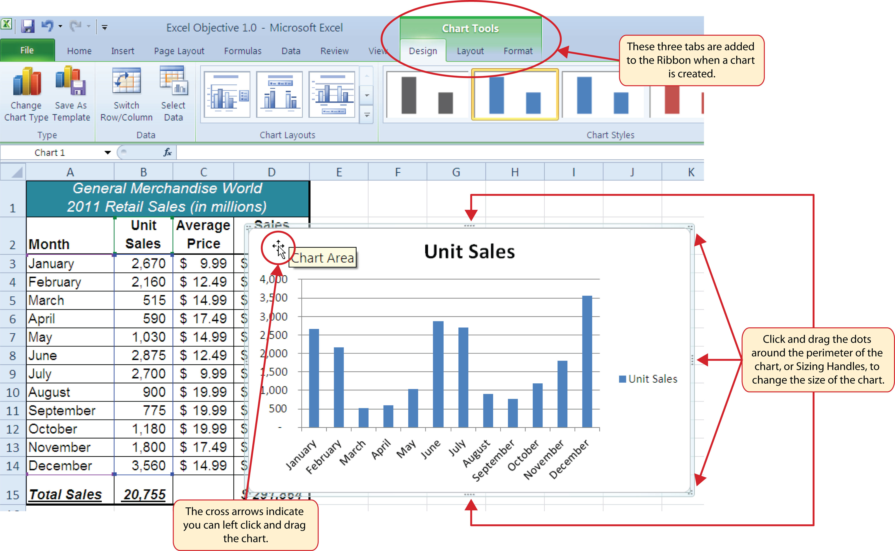Left click and drag the chart so the upper left corner is placed in the middle of cell F1 (see Figure 1.51 "Moving an Embedded Chart").
Figure 1.51 Moving an Embedded Chart
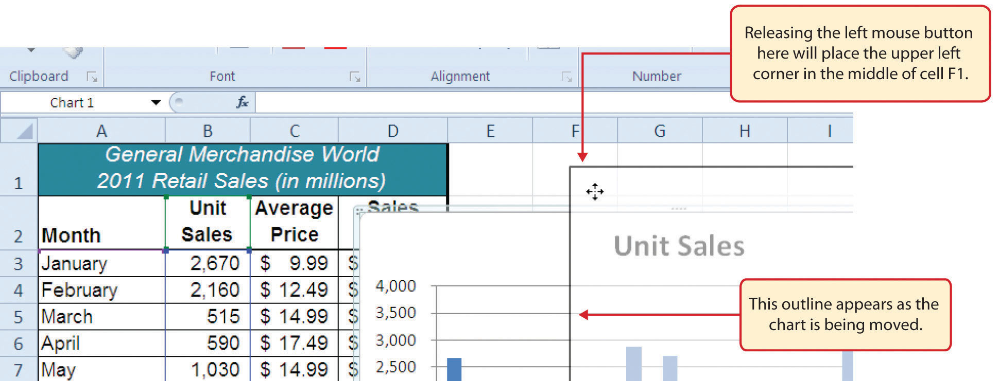While holding down the ALT key on your keyboard, left click and drag the mouse slightly to the right. The chart will automatically adjust to the right side of Column M.
There Are No Sizing Handles on a Chart
If you do not see the dots or sizing handles around the perimeter of a chart, it could be that the chart is not activated. To activate a chart, left click anywhere on the chart.
Figure 1.52 "Embedded Chart Moved and Resized" shows the column chart moved and resized. Notice that the sizing handles are not visible around the perimeter of the chart. This is because the chart is not activated. Once you click anywhere on the worksheet outside the chart area, the chart is automatically deactivated.
Figure 1.52 Embedded Chart Moved and Resized

Use the ALT Key When Resizing a Chart
Using the ALT key while resizing an embedded chart locks the perimeter of the chart to the columns and rows of the worksheet. This gives you the ability to adjust the chart to precise sizes as you adjust the width and height of the worksheet rows and columns.
As shown in Figure 1.50 "Embedded Column Chart in Sheet1", when a chart is created, three tabs are added to the Ribbon. The following steps explain how to use a few of the formatting and design features in these tabs:
Click the down arrow on the right side of the Chart Styles section (see Figure 1.53 "Chart Styles in the Design Tab").
Figure 1.53 Chart Styles in the Design Tab
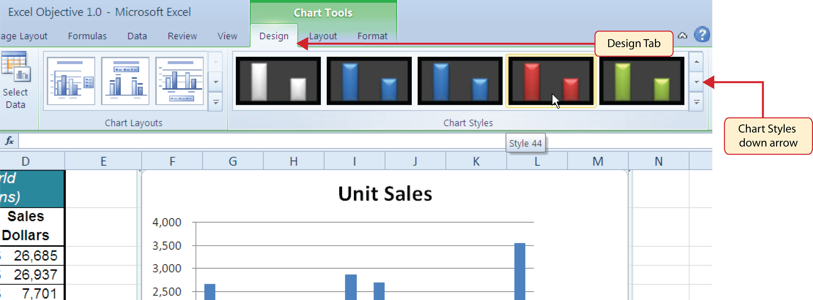Figure 1.54 WordArt Styles in the Format Tab
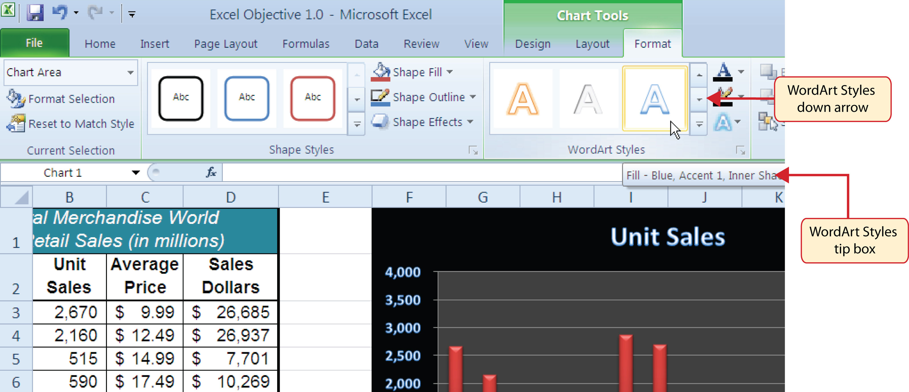Click the Blue, Accent 1, Inner Shadow option (see Figure 1.54 "WordArt Styles in the Format Tab"). Notice that as you move the mouse pointer over the WordArt Styles options, the format of the chart title as well as the X and Y axis titles changes.
Figure 1.55 "Formatting Features Applied to the Column Chart" shows the embedded column chart with the formatting features applied. This chart is very effective in displaying the Unit Sales trends for this company. You can see very quickly that the tallest bar in the chart is the month of December, followed by the months of June, July, January, and February.
Figure 1.55 Formatting Features Applied to the Column Chart

Follow-along file: Excel Objective 1.0 (Use file Excel Objective 1.11 if you are starting with this skill.)
The Cut, Copy, and Paste commands are perhaps the most widely used commands in Microsoft Office. With regard to Excel, the Copy and Paste commands are often used to make copies of worksheets for developing different scenarios or versions for the data being analyzed. The following steps demonstrate how these commands are used for the objective in this chapter:
Click the Select All button in the upper left corner of the Sheet1 worksheet (see Figure 1.56 "Clipboard Group of Commands").
Figure 1.56 Clipboard Group of Commands

Click the Copy button in the Clipboard group of commands in the Home tab of the Ribbon (see Figure 1.56 "Clipboard Group of Commands").
Copy
Click the Paste button in the Clipboard group of commands in the Home tab of the Ribbon. Be sure to click the upper area of the Paste button and not the down arrow at the bottom of the button. A copy of Sheet1 will now appear in Sheet2.
Paste
Click the Cut button in the Clipboard group on the Home tab of the Ribbon. This will remove the chart from the Sheet2 worksheet.
Cut
Follow-along file: Excel Objective 1.0 (Use file Excel Objective 1.12 if you are starting with this skill.)
As mentioned earlier in this section, a chart is a tool that enables worksheet readers to analyze data quickly to spot key trends or patterns. Another powerful tool that provides similar benefits is the SortAn Excel command used to rank the data in a worksheet based on designated criteria. command. This feature ranks the rows of data in a worksheet based on designated criteria. The following steps demonstrate how the Sort command is used to rank the data in the Sheet2 worksheet:
Click the Sort button in the Sort & Filter group of commands. This will open the Sort dialog box (see Figure 1.57 "Sort & Filter Group of Commands").
Figure 1.57 Sort & Filter Group of Commands
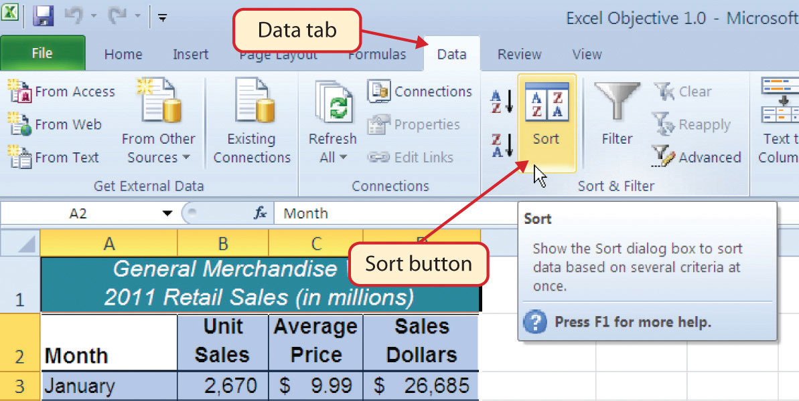Click the down arrow next to the “Sort by” drop-down box in the Sort dialog box (see Figure 1.58 "Sort Dialog Box").
Figure 1.58 Sort Dialog Box

Sorting Data
Carefully check the highlighted range of the data you are sorting. It is critical that all columns in a contiguous range of data are highlighted before sorting. If you do not sort all the columns in a data set, the data could become corrupted in such a way that it may not be corrected. If Excel detects that you are trying to sort only part of a contiguous range of data, it will give you a warning dialog box.
Figure 1.59 "Data Sorted Based on Unit Sales" shows the data in the Sheet2 worksheet sorted based on the values in the Unit Sales column. Similar to the chart, the Sort command makes it easy to identify the months of the year with the highest unit sales.
Figure 1.59 Data Sorted Based on Unit Sales

Follow-along file: Excel Objective 1.0 (Use file Excel Objective 1.13 if you are starting with this skill.)
The default names for the worksheet tabs at the bottom of workbook are Sheet1, Sheet2, and so on. However, you can change the worksheet tab names to identify the data you are using in a workbook. Additionally, you can change the order in which the worksheet tabs appear in the workbook. The following steps explain how to rename and move the worksheets in a workbook:
Press the ENTER key on your keyboard.
Figure 1.60 Renaming a Worksheet Tab

Deleting Worksheets
Be very cautious when deleting worksheets that contain data. Once a worksheet is deleted, you cannot use the Undo command to bring the sheet back. Deleting a worksheet is a permanent command.
Inserting New Worksheets
Figure 1.61 "Final Appearance of the Excel Objective 1.0 Workbook" shows the final appearance of the Excel Objective 1.0 workbook after the worksheet tabs have been renamed and moved.
Figure 1.61 Final Appearance of the Excel Objective 1.0 Workbook
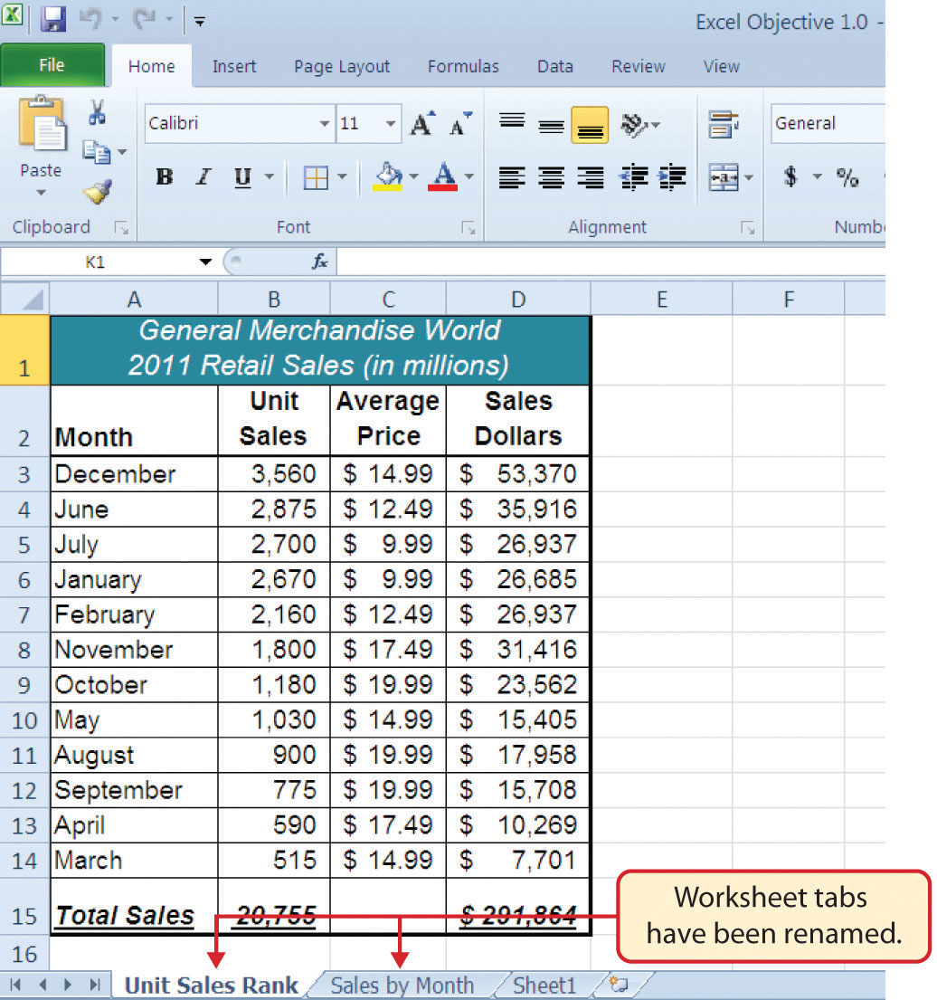The pound signs (####) that appear in a cell location indicate that:
Which of the following is most accurate with respect to the Wrap Text command?
What is the quickest way to center a title over six columns of data?
Which of the following is true with respect to deleting worksheets?
Once you have completed a workbook, it is good practice to select the appropriate settings for printing. These settings are in the Page Layout tab of the Ribbon and discussed in this section of the chapter.
Follow-along file: Excel Objective 1.0 (Use file Excel Objective 1.14 if you are starting with this skill.)
Before you can properly print the worksheets in a workbook, you must establish appropriate settings. The following steps explain several of the commands in the Page Layout tab of the Ribbon used to prepare a worksheet for printing:
Use Print Settings
Because professionals often share Excel workbooks, it is a good practice to select the appropriate print settings in the Page Layout tab even if you do not intend to print the worksheets in a workbook. It can be extremely frustrating for recipients of a workbook who wish to print your worksheets to find that the necessary print settings have not been selected. This may reflect poorly on your attention to detail, especially if the recipient of the workbook is your boss.
Figure 1.62 Page Layout Commands for Printing

Table 1.2 Printing Resources: Purpose and Use for Page Setup Commands
| Command | Purpose | Use |
|---|---|---|
| Margins | Sets the top, bottom, right, and left margin space for the printed document | 1. Click the Page Layout tab of the Ribbon. |
| 2. Click the Margin button. | ||
| 3. Click one of the preset margin options or click Custom Margins. | ||
| Orientation | Sets the orientation of the printed document to either portrait or landscape | 1. Click the Page Layout tab of the Ribbon. |
| 2. Click the Orientation button. | ||
| 3. Click one of the preset orientation options. | ||
| Size | Sets the paper size for the printed document | 1. Click the Page Layout tab of the Ribbon. |
| 2. Click the Size button. | ||
| 3. Click one of the preset paper size options or click More Paper Sizes. | ||
| Print Area | Used for printing only a specific area or range of cells on a worksheet | 1. Highlight the range of cells on a worksheet that you wish to print. |
| 2. Click the Page Layout tab of the Ribbon. | ||
| 3. Click the Print Area button. | ||
| 4. Click the Set Print Area option from the drop-down list. | ||
| Breaks | Allows you to manually set the page breaks on a worksheet | 1. Activate a cell on the worksheet where the page break should be placed. Breaks are created above and to the left of the activated cell. |
| 2. Click the Page Layout tab of the Ribbon. | ||
| 3. Click the Breaks button. | ||
| 4. Click the Insert Page Break option from the drop-down list. | ||
| Background | Adds a picture behind the cell locations in a worksheet | 1. Click the Page Layout tab of the Ribbon. |
| 2. Click the Background button. | ||
| 3. Select a picture stored on your computer or network. | ||
| Print Titles | Used when printing large data sets that are several pages long. This command will repeat the column headings at the top of each printed page. | 1. Click the Page Layout tab of the Ribbon. |
| 2. Click the Print Titles button. | ||
| 3. Click in the Rows to Repeat at Top input box in the Page Setup dialog box. | ||
| 4. Click any cell in the row that contains the column headings for your worksheet. | ||
| 5. Click the OK button at the bottom of the Page Setup dialog box. |
Follow-along file: Excel Objective 1.0 (Use file Excel Objective 1.15 if you are starting with this skill.)
When printing worksheets from Excel, it is common to add headersSpace at the top of a printed worksheet that contains information such as the date, page number, file name, company name, and so on. and footersSpace at the bottom of a printed worksheet that contains information such as the date, page number, file name, company name, and so on. to the printed document. Information in the header or footer could include the date, page number, file name, company name, and so on. The following steps explain how to add headers and footers to the Excel Objective 1.0 workbook:
Click the Header & Footer button in the Text group of commands. You will see the Design tab added to the Ribbon; this is used for creating the headers and footers for the printed worksheet. Also, this will convert the view of the worksheet from Normal to Page Layout (see Figure 1.63 "Design Tab for Creating Headers and Footers").
Figure 1.63 Design Tab for Creating Headers and Footers
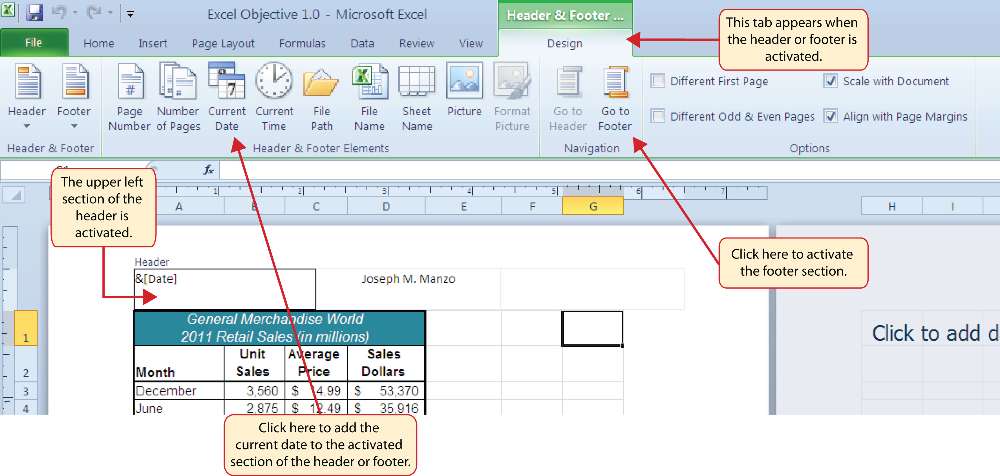Click the Normal view button in the lower right side of the Status Bar (see Figure 1.64 "Worksheet in Page Layout View").
Figure 1.64 Worksheet in Page Layout View
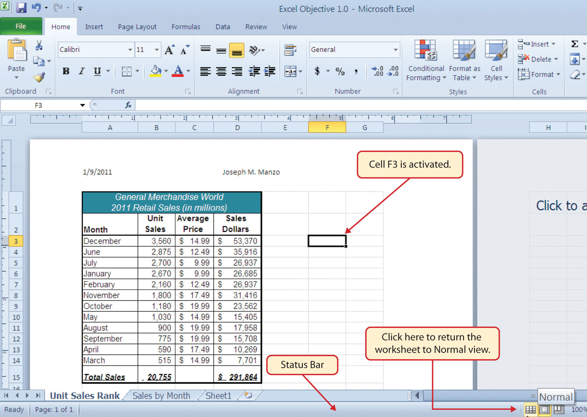Follow-along file: Excel Objective 1.0 (Use file Excel Objective 1.16 if you are starting with this skill.)
Once you have established the print settings for the worksheets in a workbook and have added headers and footers, you are ready to print your worksheets. The following steps explain how to print the worksheets in the Excel Objective 1.0 workbook:
Click the Print option on the left side of the Backstage view (see Figure 1.65 "Print Preview"). On the right side of the Backstage view, you will be able to see a preview of your printed worksheet.
Figure 1.65 Print Preview
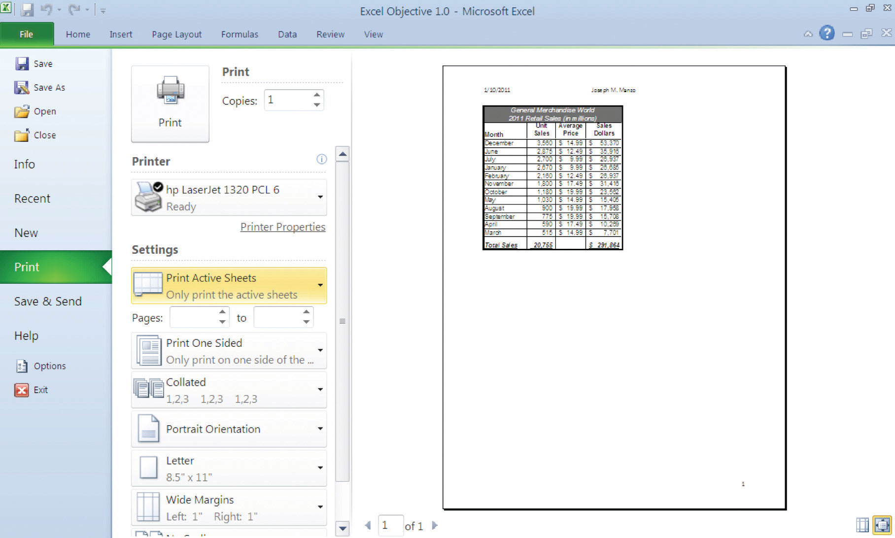Which of the following commands is used to print the column headings in a worksheet at the top of each printed page for a worksheet that contains 100 rows of data?
Which of the following is true with respect to printing Excel worksheets?
To assess your understanding of the material covered in the chapter, please complete the following assignments.
Basic Monthly Budget for Medical Office (Comprehensive Review)
Starter File: Chapter 1 CiP Exercise 1
Difficulty: Level 1
Creating and maintaining budgets are common practices in many careers. Budgets play a critical role in helping a business or household control expenditures. In this exercise you will create a budget for a hypothetical medical office while reviewing the skills covered in this chapter. Begin the exercise by opening the file named Chapter 1 CiP Exercise 1.
Entering, Editing, and Managing Data
Adjust the width of Column B to 13.29 characters.
Formatting and Basic Charts
Add labels to the chart by clicking the Layout 1 option from the Chart Layouts list in the Design tab of the Ribbon. Make sure the chart is activated by clicking it once before you look for the Layout 1 Chart Layout option.
Printing
Figure 1.66 Completed Medical Budget Exercise

Marketing for Specialty Women’s Apparel
Starter File: Chapter 1 CiP Exercise 2
Difficulty: Level 2
A key activity for marketing professionals is to analyze how population demographics change in certain regions. This is especially important for specialty retail stores that target a specific age group within a population. This exercise utilizes the skills covered in this chapter to analyze hypothetical population trends. The decisions that can be made with such information include where to open new stores, whether existing stores should be closed and reopened in other communities, or whether the product assortment should be adjusted. The purpose of this exercise is to use the skills presented in this chapter to analyze hypothetical population trends for a fashion retailer.
Figure 1.67 Completed Population Trends Exercise

Starter File: Chapter 1 IC Exercise 1
Difficulty: Level 3
The purpose of this exercise is to analyze a worksheet to determine whether there are any integrity flaws. First, read the scenario below. Then, open the file that is related to this exercise and analyze the worksheets contained in the workbook. You will find a worksheet in the workbook named AnswerSheet. This worksheet is to be used for any written responses required for this exercise.
Scenario
Your coworker provides you with sales data in an Excel workbook, which you intend to use for a sales strategy meeting with your boss. The workbook was attached to an e-mail with the following points stated in the message.
Cost per item data:
| Item | Cost |
|---|---|
| Black Flat | $35.00 |
| Bracelet | $30.00 |
| Brown Pump | $25.00 |
| Daisy Print | $40.00 |
| Grey Stripe | $110.00 |
| Jersey Knit | $80.00 |
| Navy Pinstripe | $125.00 |
| Navy Wool | $135.00 |
| Quartz Watch | $80.00 |
| Sandal | $45.00 |
| Tan Trench | $115.00 |
| Topaz Ring | $50.00 |
Assignment
The assignment in this section requires that you apply the skills presented in this chapter to achieve the stated objective. Read the assignment first and then open the file and complete the stated requirements. When you complete an assignment, save the file by adding your name in front of the current name of the workbook.
Starter File: Chapter 1 AES Assignment 1
Difficulty: Level 3
The workbook for this assignment contains sales plan data by month for merchandise categories sold by a hypothetical clothing retailer. Use the skills covered in this chapter to accomplish the points listed below.
Instead of showing the sales plan dollars by month, calculate the plan dollars for each quarter (see the following figure, “Layout for Sales by Quarter”). The months assigned to each quarter are as follows:
Figure 1.68 Layout for Sales by Quarter
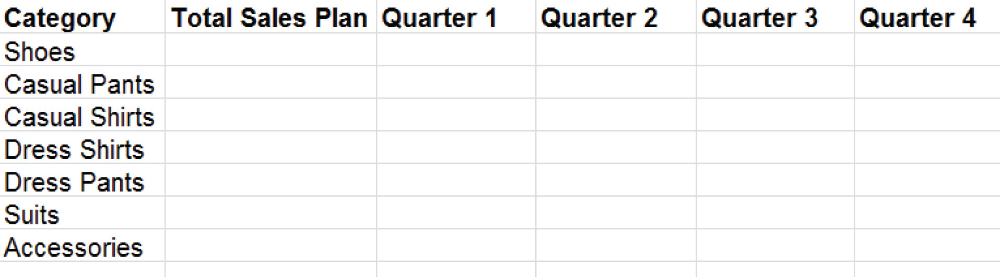Starter File: Chapter 1 Skills Test
Difficulty: Level 2
Answer the following questions by executing the skills on the starter file required for this test. Answer each question in the order in which it appears. If you do not know the answer, skip to the next question. Open the starter file listed above before you begin this test.